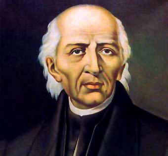
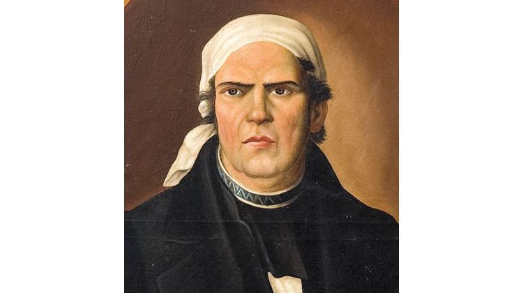
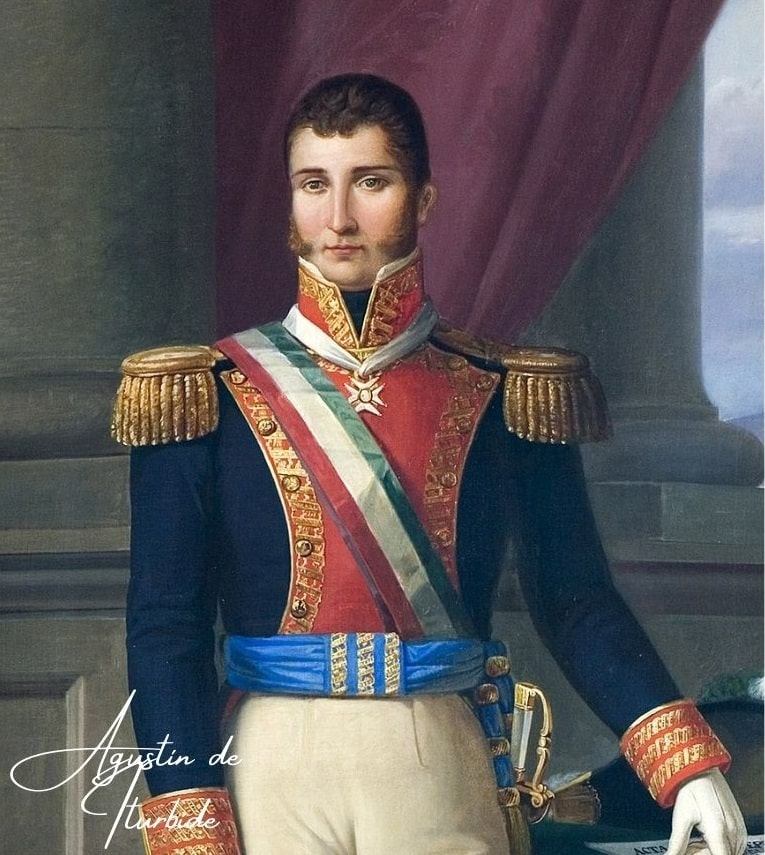

Miguel Hidalgo y Costilla: Conocido como el Padre de la Patria. Sacerdote y militar insurgente que inició el movimiento independentista.

José María Morelos y Pavón: Llevó a cabo las campañas militares en el sur del país y sentó las bases institucionales del movimiento insurgente.

Josefa Ortiz de Domínguez: La Corregidora de Querétaro, figura clave de la conspiración que avisó a Hidalgo sobre la marcha de las tropas realistas.

Vicente Guerrero: General insurgente que mantuvo viva la resistencia en las montañas del sur y pactó la paz con Agustín de Iturbide.

Agustín de Iturbide: Militar realista que pactó el Plan de Iguala junto a Guerrero, unificando a los ejércitos para consolidar la independencia.

Ignacio Allende: Líder de la conspiración inicial y jefe militar junto con Hidalgo durante las primeras etapas del levantamiento.